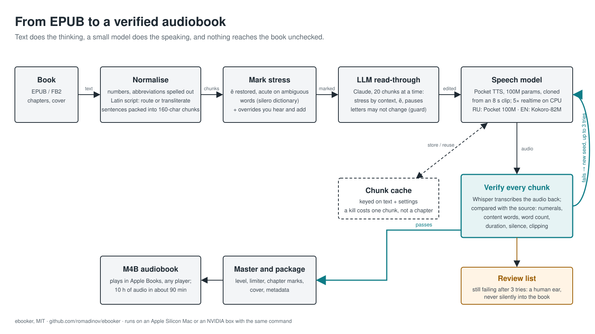

Turn a shelf of EPUBs into M4B audiobooks on your own machine. Every chunk of speech is transcribed back and compared with the text, because speech models drop and mangle words silently. These two samples were rendered by the pipeline from public-domain texts, with no hand editing.
uv run ebooker convert book.epub # → out/<Title>.m4bRussian · Чехов, «Дама с собачкой» (1899)
40 s4 paragraphs, 6 chunksWhisper read it back word for word
Shtorm-PocketTTS-RU, a 100M-parameter Russian fine-tune of Kyutai's Pocket TTS (CC-BY-4.0), cloning the voice from the 3.6-second clip that ships with the repo. Stress is decided before synthesis: ё restored and ambiguous words marked with an acute by a stress dictionary, which this model follows. About five times faster than real time on a CPU. --backend pocket --voice voices/ref_ru_short.wav
Говорили, что на набережной появилось новое лицо: дама с собачкой. Дмитрий Дмитрич Гуров, проживший в Ялте уже две недели и привыкший тут, тоже стал интересоваться новыми лицами. Сидя в павильоне у Верне, он видел, как по набережной прошла молодая дама, невысокого роста блондинка, в берете; за нею бежал белый шпиц…
English · H. G. Wells, The War of the Worlds (1898)
58 s4 paragraphs, 8 chunksWhisper read it back word for word
Kokoro-82M (Apache 2.0), the default for English books: 82M parameters, preset voices rather than cloning (this is bm_george; American English defaults to am_michael), 0% word errors on the test corpus and about twenty times faster than real time on an Apple Silicon Mac. It needs espeak-ng only for words outside its vocabulary. --backend kokoro, picked automatically for dc:language = en.
No one would have believed in the last years of the nineteenth century that this world was being watched keenly and closely by intelligences greater than man's and yet as mortal as his own; that as men busied themselves about their various concerns they were scrutinised and studied…
How a book goes through

Text does the work the model cannot (numbers, Latin script, stress, pauses), a small model speaks it, and every chunk is transcribed back and compared before it is allowed into the book. Failures are re-rolled with a new seed; after three, they go to a review list for a human ear.
Backends
Russian
Shtorm-PocketTTS-RU (default pick for a cloned narrator), stress-tuned Qwen3-TTS, ESpeech, Piper, Silero. All but Silero follow explicit stress marks; the README has the comparison.
English
Kokoro-82M by default; the cloning backends read English too, and English sentences inside a Russian book are routed to an English model automatically.
Verification
Whisper transcribes every chunk back; numerals, content words, word count, duration, silence and clipping are checked, and failures are re-generated with another seed.
Hardware
Apple Silicon (MPS) or NVIDIA (CUDA) with the same command; the small models are fine on CPU.